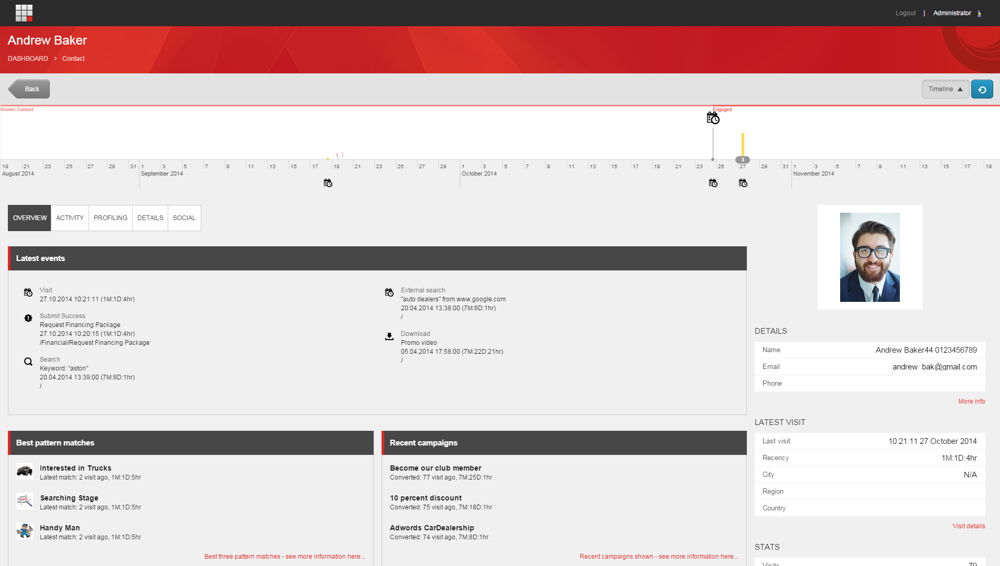
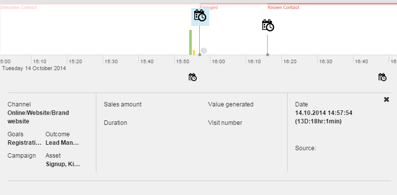

エクスペリエンス プロファイル ダッシュボード¶
エクスペリエンスプロファイルは、タイムラインと複数のタブで構成されており、個々の連絡先の主要な経験分析データの要約を表示します。一度に1つのコンタクトを表示することができます。
右側の情報エリアには、そのコンタクトに関連する最新の訪問情報とメトリクスの概要が継続的に表示されます。
[最新訪問] パネルには訪問詳細レポートへのリンクが含まれており、コンタクトの最新訪問に関する詳細情報が表示されます。
{kind=link}
エクスペリエンスプロフィールタイムライン¶
エクスペリエンスプロファイルの上部には、コンタクトが組織と行ったエクスペリエンスマーケティングのイベントや活動がタイムラインで表示されます。一連のアイコンは、タイムライン上の重要なイベントを強調表示します。アイコンをクリックすると、タイムラインの下に表示されるイベントの詳細を見ることができます。例えば、どのチャネルからコンタクトをウェブサイトに誘導したのかなどです。
アイコン |
説明 |
新しいコンタクト - この段階でコンタクトが匿名であった場合でも、最初のインタラクションの日時が表示されます。 |
|
チャンネル - 連絡先がどのチャンネルから発信されたかを示します。アイコンがチャネルに割り当てられていない場合、このアイコンはデフォルトで使用されます。 |
|
ゴールコンバージョン - このアイコンは、ゴールがトリガーされたときに表示されます。 |
|
訪問時間 - 日付、時間、接触セッションの長さ。 |
|
価値 - タイムラインのこの時点でコンタクトが蓄積したエンゲージメントの価値ポイント。 |
|
キャンペーン - このアイコンは、キャンペーンイベントがトリガーされたときに表示されます。 |
|
開く - このアイコンは、連絡先が電子メールメッセージを開いたときに表示されます。 |
|
クリック - このアイコンは、連絡先が電子メールメッセージのリンクをクリックしたときに表示されます。 |
|
バウンス - このアイコンは、電子メールメッセージがバウンドした場合に表示されます。 |
|
スパム - 連絡先が電子メールメッセージをスパムとしてマークした場合、このアイコンが表示されます。 |
Sitecore XP 8.1 Update 3以降から適用されます。
タイムラインを掘り下げるには、表示されているアクティビティをクリックします。例えば、時計のアイコンをクリックすると、コンタクトがインタラクションを行うために使用したチャネルの詳細情報を見ることができます。
{kind=link}
エクスペリエンスプロフィールタブ¶
以下の表は、エクスペリエンス プロファイルの各タブとサブタブに含まれる情報の概要を示しています。
タブ/サブタブ/グループ |
説明 |
概要/最新イベント |
最新のコンタクト訪問と、その他の最新イベントを最大9件まで表示します。例えば、コンバージョンされたゴール、ダウンロード、外部/有料検索などです。 イベントはタイプ別にグループ化され、イベントが複数回トリガーされた場合、最新イベントタブには1回のみ表示されます。 最新イベントグループに表示されるイベントは、コンテンツエディタで事前に設定します。 |
概要 /ベストパターンに合致する |
訪問者のプロフィールとパターンがどの程度密接に一致しているかに基づいて、コンタクトに最もマッチするパターンのトップ 3 を表示します。 |
概要・最新キャンペーン |
最近トリガーした3つのキャンペーンを紹介します。 |
活動/訪問/訪問 |
来訪歴順の一覧を表示します。 訪問をクリックすると、訪問詳細レポートが表示されます。 訪問詳細レポートには、訪問したページ、コンバージョンされたゴール、使用した内部検索キーワードなど、訪問に関するより詳細な情報が含まれています。 Sitecore Commerceをインストールしている場合は、Sitecore Commerceからのイベント、ゴール、成果が表示されます。訪問詳細レポートには、どのような商品がカートに追加されたかなどの情報は含まれていません。 |
活動/訪問/イベント |
コンタクトがトリガーした最新のイベントのリストを表示します。イベントは、頻度の高い順に並べ替えられます。 イベントグループに表示されるイベントは、コンテンツエディタで事前に設定されています。 |
活動内容・成果 |
コンタクトが達成したすべての成果を一覧表示します。コンタクトが達成したデフォルトのリード管理ファネルのステージを、異なる成果が達成された日時を含めて表示します。 |
活動内容/キャンペーン |
コンタクトが参加したすべてのキャンペーンをリストアップします。 |
活動/チャンネル/配信 |
コンタクトが従事した活動と、その活動のさまざまなチャネルへの分布をグラフィカルに表示します。 チャネルは以下の通りです。 ダイレクト デジタルイベント テレマーケティング 店舗 |
活動内容/チャンネル/概要 |
チャンネル別の活動一覧です。 |
活動・目標 |
コンタクトがトリガーとなったすべてのゴールをリストアップします。 |
アクティビティ/オートメーション/エンゲージメントプラン |
コンタクトがトリガーしたエンゲージメントプランと、各プランでコンタクトが占める現在の状態を一覧表示します。 |
活動内容/キーワード/外部キーワード |
コンタクトがGoogleやBingなどの検索エンジンで使用した明確なキーワードのリストです。選択したキーワードについては、検索エンジンのリスト、訪問期間、値など、より詳細な情報を見ることができます。 |
活動/キーワード/内部キーワード |
サイト内検索で使用したキーワードを一覧表示します。 |
活動内容/キーワード/有料キーワード |
例えば、Google AdWordsなどで使用されている明確な有料キーワードを一覧表示します。選択したキーワードについては、ソースのリスト、訪問期間、値など、より詳細な情報を見ることができます。 |
プロファイリング |
この連絡先が行った訪問に基づいて、各プロフィールに最適なパターンカードが表示されます。 このタブには、このコンタクトがウェブサイトに行った訪問に基づいて、各プロファイルに最適なパターンカードの一致が表示されます。 たとえば、次のようなプロファイルのセットがあるとします。 ペルソナ 車の種類 購入サイクルのステージ 各プロファイルについて、レーダーチャートとプロファイルキーのスコアが表示されます。プロファイルとプロファイルキーは、Sitecore Marketing Control Panelで事前に設定されています。 |
詳細・お問い合わせ先 |
連絡先のすべての連絡先情報が含まれています。 連絡先は、すべてのメールアドレスと電話番号そのものを入力します。 |
ソーシャル/フェイスブック |
Facebookへの接続を設定している場合、このサブセクションでは、連絡先のFacebook情報の概要が表示されます。 |
ソーシャル/ツイッター |
Twitterへの接続を設定している場合、このサブセクションには連絡先のTwitter情報の概要が表示されます。 |
ソーシャル/G+ |
G+への接続を設定している場合、このサブセクションでは、連絡先のG+情報の概要が表示されます。 |
ソーシャル/リンクイン |
LinkedInへの接続を設定している場合、このサブセクションでは、連絡先のLinkedIn情報の概要が表示されます。 |
{kind=link}